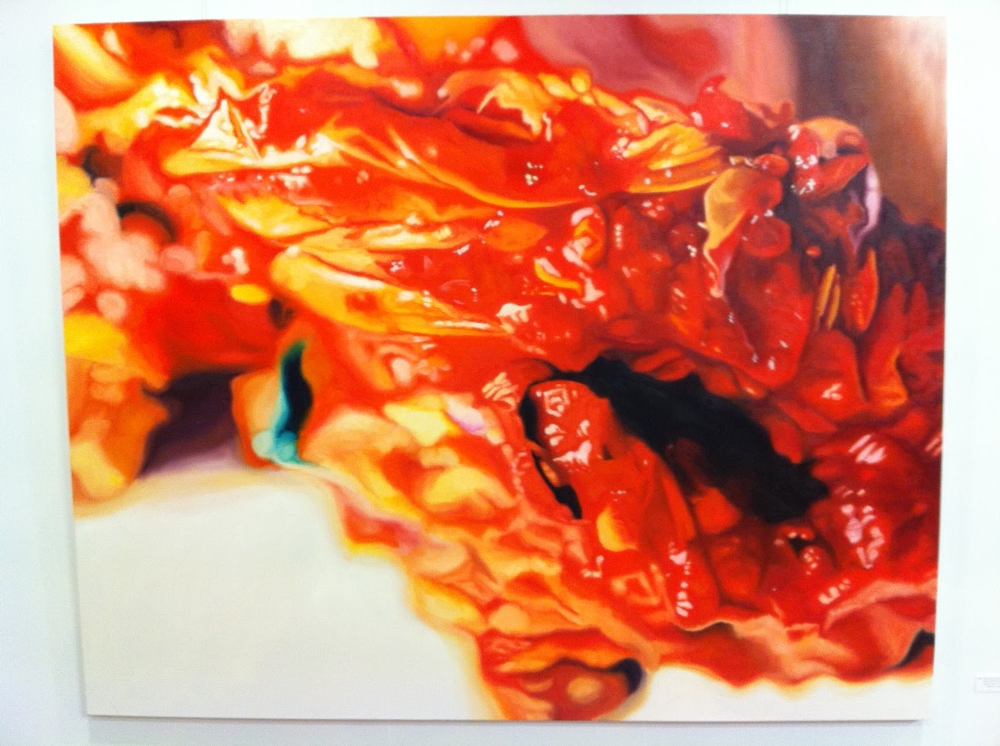
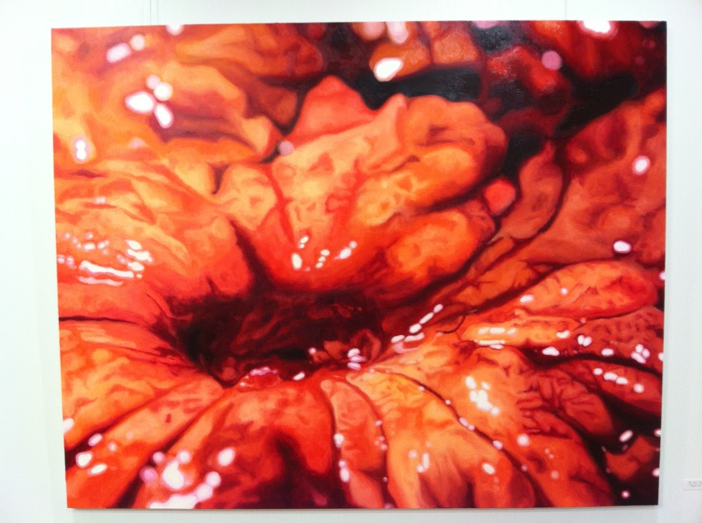
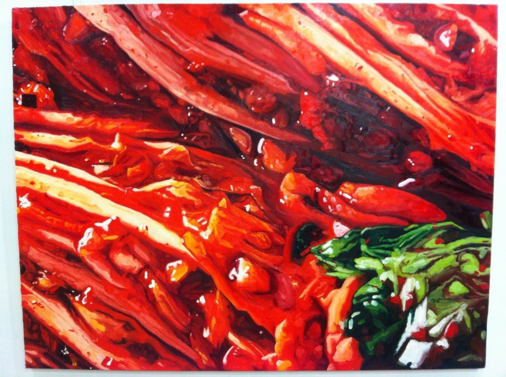
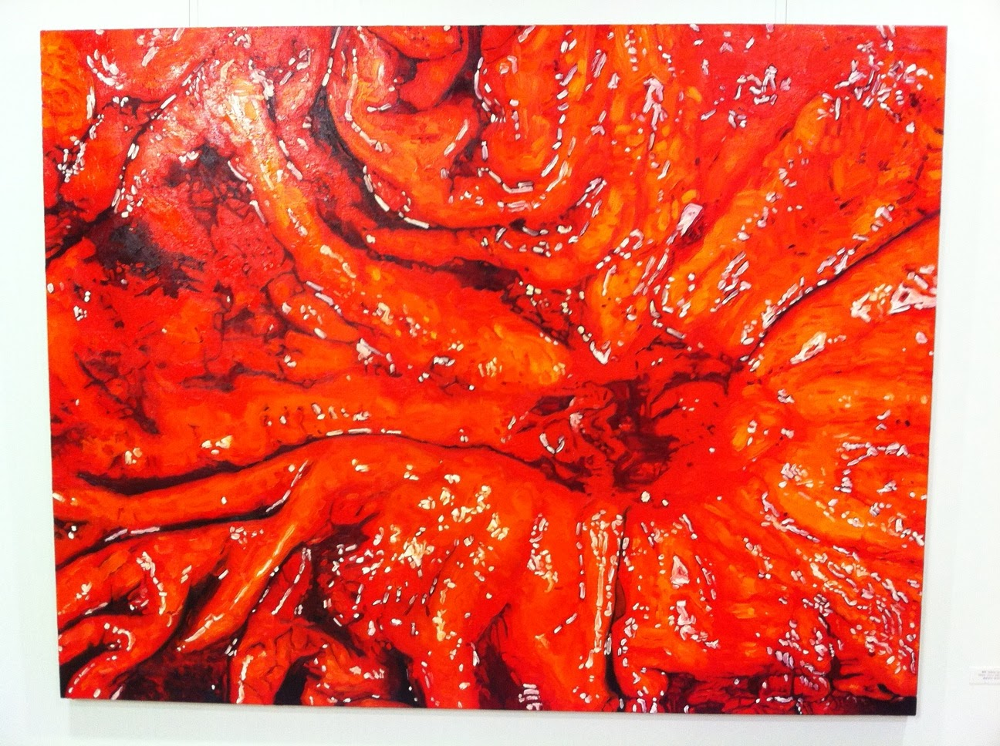

'Imma gonna eat choo!' Zhiwan Cheung: recent paintings
Sunday November 28, 2010
|  |
| When the sky turns black... why do I feel so blue? |
{kind=link}
I went to see my friend Chris's art show the other weekend (2010 November 13). The details are as follows:
Imma gonna eat choo!
Zhiwan Cheung: recent paintings
November 7 - December 31 2010
갤러리뉴욕 Gallery New York
경기도 광명시 철산 3동 426
서림빌딩 3층 광명뉴욕치과
(Just outside Seoul, South Korea)
02-2616-2300 www.lsdclinic.com
mon-fri 9:30-7pm, sat 9:30-4pm, sun & holidays closed
Gallery New York actually shares a floor with the New York Dental Clinic, with the unfortunate LSDclinic.com web address. They have a good animated map. The subway stop is 철산역 Cheolsan station, on Seoul subway line 7.
The show is big pictures of kimchi and big pictures of stomachs. Stomachs with ulcers.
|  |
| Culture Vultures |
{kind=link}
These three paragraphs were provided to describe the exhibition. The English was presented second, but here it is first:
"Eat me" screams a canvas of Kimchi, fermented and bloated to match its cultural importance, and "inflame me" whispers its gastric doppelganger. Many will take for granted these dialogues of food and body. In Korea, Kimchi IS the significantly insignificant commodity. It IS the most important edible cipher in society. But, it is often relegated to vats as "readily available" and rarely the "specialty." And, for all its significance - the long fermentation process, the regional varieties, the passionate titular debates over "kimuchi vs. kimchi" - Kimchi is orphaned at the table, jealously eyeing its other side dish cousins get happily eaten. Nonetheless, Kimchi is constantly consumed on a daily basis, in varying quantities - ambrosia for the tongue and the ultimate workout for the stomach. The turbulent adventures of our tongues and stomaches continue. We are entranced. We are rendered gastronomically catatonic.
And thus, the Internet spews photographic fountains of Kimchi. The paintings themselves monstrously grin "eat me" and the internal organs mix in an orgy of bloody corporeal colors that seduce one into believing that the qualms of the stomach are nothing but a chimera. The canvas enlargements are yet just a further representation of how humans consume in mass quantities and to excess and gain malfunctions to the excess. These paintings glamorize the malfunction and show ulcers in all their grand cadmium rivers - perhaps to parallel the degree to which we have allowed our consumption to have access to our bodies. And because of this, perhaps, Kimchi is all the more beautiful. Thoroughly smitten, the stomach has nothing to say but:
Feed me.
|  |
| How totally banal of you to ask what I really mean |
{kind=link}
The two kimchi paintings in the main room of the exhibition differ substantially in technique. The one at the top of this page ("When the sky turns black... why do I feel so blue?") is more refined, with much smoother brushwork. It is also the piece that was selected for the show's promotional materials. I really like this one though ("How totally banal of you to ask what I really mean") with its splash of green.
I also really experience visual art through titles and descriptions. When I go to an art museum I like to see what everything is called, and often the title and description is more fun than the actual piece, for me. Maybe my art appreciation skills are not finely tuned, maybe my brain is just really text-oriented.
This painting is called "How totally banal of you to ask what I really mean." While it may just be saying that you should trust the artist's explanation and not second guess it or insist on finding some other meaning, it also reminds me of my sister's standpoint on her art, which is basically total refusal to explain herself. But whether you provide text hooks for visually impaired folks like me, or only put up the paintings by themselves, modern art is about pushing your head around, as far as I'm concerned. Art museums are like playgrounds for your brain; a million different things you can mess around with.
 |
| Happy be happy |
Here's the Korean version of the show explanation:
김치로 꽉 찬 캔버스가 소리지른다, "날 먹어"! 발효로 부풀어 오른 모양이 김치의 사회적 중요성을 서사하는가하면, 위 속의 도플갱어는 "날 불태워버러"라고 귓속말로 속삭인다. 많은 사람들은 음식과 육체 사이에 존재하는 이러한 대화를 간과하곤 한다. 특히 김치는 한국에서 하찮은 상품으로 존재하면서도 중요한 사회적 먹을 수 있는 암호로도 작용한다. 김치는 "어디서도 구할 수 있는" 정도로 격하되고 "특별한 것"이라고 생각되는 경우는 드물다. 긴 숙성을 거쳐 나온 각양각색의 전통 김치는 명목상으론 국제적 이슈가 되기도 하지만 ("김치"라고 표기 할지 "기무치"라고 표기 할지에 대한 논란), 막상 식탁 위에 오르면 다른 반찬들에 비해 소외시되곤 한다. 여전히 우리는 매 식사마다 당연하듯 다양한 양의 김치를 소비하지만, 그것의 육체적 경험, 다시 말해 김치가 몸 속을 통과하면서 혀가 느끼는 암브로시아와 위가 행하는 거친 운동의 경험이 무의식 속 우리를 도취시키고 우리의 미각을 긴장시킨다는 것을 의식하지 못한다.
인터넷이 김치의 다양한 사진을 뿜어 내는 한편, 나의 김치 페인팅은 "날 먹어" 라며 기괴하게 웃으면서, 내장을 연상시키는 광란의 핏빛 색깔은 뱃속에서 느껴지는 꺼림칙함이 단지 일종의 키메라에 불과하다고 믿게 만든다. 캔버스를 꽉 채운 김치의 클로즈업은 우리의 과소비와 거기서 오는 후유증은 생각하지 못하는 것을 상징한다. 내 작업은 과함의 후유증을 미화하고 궤양의 웅장한 카드뮴 강을 보여준다. 하지만 이러한 양면성 때문에 김치는 더욱 아름다운 것일 수도 있다. 김치의 매력에 철저히 엄습당한 위는 결국 한마디 말 밖에 남아있지 않았다:
"내 배를 채워죠."
|  |
| Infinite Jest |
{kind=link}
And these three untitled paintings were in a separate room: one big one which I guess is kimchi, and two little ones that I guess are stomach. These ones are the hardest to identify, in my opinion. At first I thought they were all stomach. Now I think they could all be kimchi. They're just pictures, really...
{kind=link}


The end!
This post was originally hosted elsewhere.